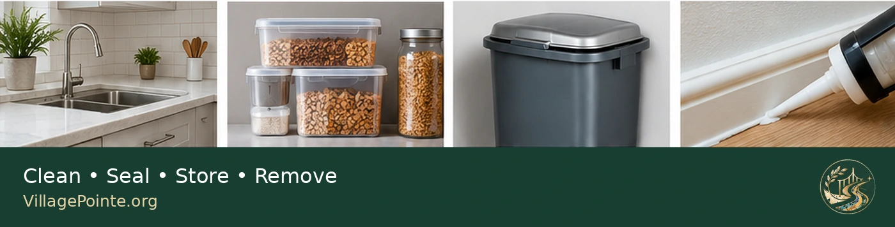
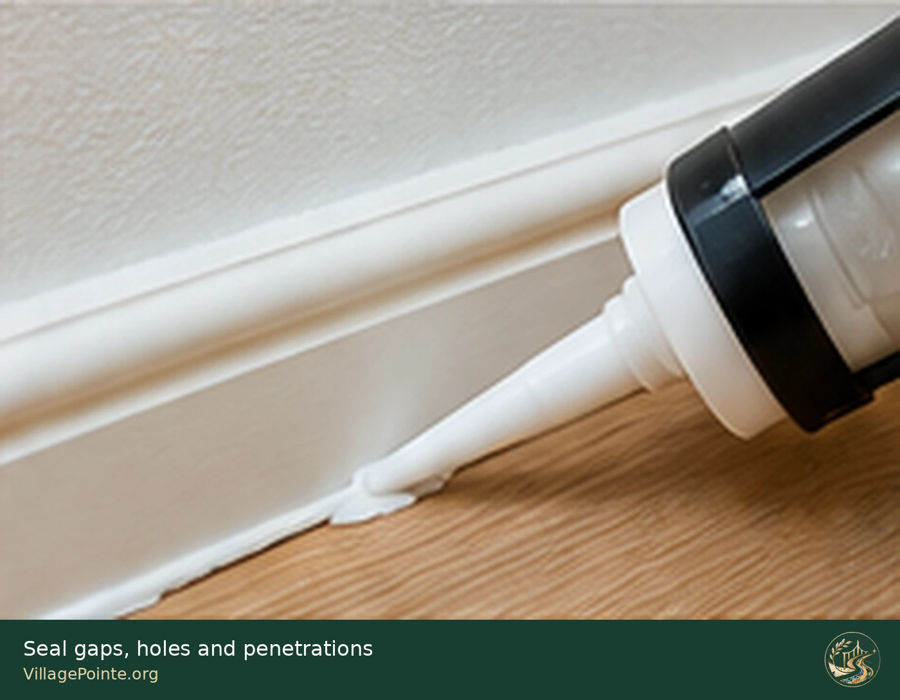
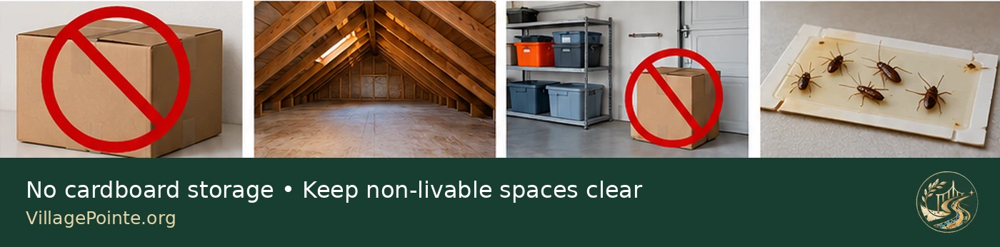

Prevention before pesticides.
Pest control should not begin with a spray can. The preferred framework is Integrated Pest Management (IPM) : prevent entry, remove food and water, remove shelter, monitor for activity, physically clean up pests and residue, and use targeted chemical treatment only when necessary.
This approach applies to cockroaches, ants, silverfish, pantry pests, mice and many other household pests. Cockroaches deserve the most detailed attention because they can become established indoors, spread through attached housing, contaminate food and surfaces, and contribute significant allergens.
Think of the entire house as a pest-control system.
Keep them out.
Seal cracks, holes, plumbing penetrations, cable openings, door gaps, window gaps, utility chases and other routes into living space.
Starve them.
No crumbs, grease, exposed food, open pet food, unwashed dishes or accessible garbage.
Dry them out.
Repair plumbing leaks, remove standing water, manage condensation and keep damp areas dry.
Deny shelter.
Remove clutter and cardboard. Keep storage orderly. Preserve inspection access around walls, appliances and utility areas.

Cockroaches: the principal indoor pest.
Cockroaches are more than an unpleasant sight. Their feces, saliva, shed skins and body fragments contain proteins that can trigger allergic reactions and worsen asthma. The National Institute of Environmental Health Sciences identifies cockroaches as a source of indoor allergens and reports a link between cockroach presence and increased asthma severity.
In New Jersey, Rutgers identifies German, American and Oriental cockroaches among the important species associated with structures. German cockroaches are especially important indoors and commonly concentrate around kitchens, bathrooms, appliances, sinks and cabinets. Daytime sightings of German cockroaches can indicate a substantial infestation.
Seal every reasonable entry point.
Inspect the residence as a building envelope. Look around kitchen and bathroom plumbing, under sinks, behind toilets, around dishwasher and refrigerator lines, at cabinet-to-wall junctions, baseboards, floor-to-wall joints, electrical and cable penetrations, window and door frames, HVAC penetrations, garage transitions and shared-wall utility chases.
Use appropriate caulk, sealant, escutcheon plates, mesh or other durable materials for the particular opening. The objective is not cosmetic: it is to physically interrupt movement through the structure.

Utmost cleanliness, maintained continuously.
For cockroaches and many other pests, sanitation is not an occasional deep-cleaning event. It is a daily operating condition of the home. Clean dishes, crumbs and spills promptly. Clean grease from cooking surfaces. Vacuum or sweep food areas regularly. Clean beneath and behind appliances, along cabinet edges, in pantry corners and under furniture.
End every day with the kitchen reset.
- No dirty dishes left overnight.
- No exposed food.
- No crumbs or grease residue.
- No standing water.
- No uncovered garbage.
- No pet food left out overnight.
- Counters, table and food-preparation areas cleaned.
Food, water and garbage are pest resources.
Store cereal, flour, rice, grains, pasta, sugar, snacks, nuts, dried fruit, pet food and similar foods in secure containers where practical. Clean pantry spills quickly and discard contaminated products if pantry pests are discovered.
Repair dripping faucets, leaking sink traps, refrigerator leaks, dishwasher leakage, washing-machine leaks and toilet leaks. Do not allow water to remain standing in sinks, plant trays or containers. Check for condensation beneath sinks and around cold-water pipes.
Use trash containers with properly fitting lids. During an active infestation, remove garbage and recycling frequently, and clean containers that have food residue.
No cardboard as long-term household storage.
Do not keep cardboard boxes in the attic, garage, closets or other areas of the house as long-term storage. Corrugated cardboard absorbs moisture and its folds, seams and internal channels provide protected spaces for insects. Damp cardboard can support or attract cockroaches, silverfish and other pests.
Remove shipping cartons, moving boxes, appliance boxes and unnecessary paper packaging promptly. For items that truly need to be stored, use clean, durable containers with secure lids instead of cardboard whenever practical.

The attic is non-livable space. Keep it empty.
The Village Pointe attic should not be treated as another household storage room. Ideally, the attic should not be used for storage at all. Boxes, paper, fabric and miscellaneous possessions create clutter, conceal pests, retain dust and moisture, and make it harder to notice roof leaks, condensation, insect activity or other building problems.
An essentially empty attic is much easier to inspect. Roof decking, insulation, vents, penetrations and signs of moisture or pests remain visible.
Garage and utility areas.
Keep the garage dry, uncluttered and as free of cardboard as practical. Garages experience outdoor pest pressure, humidity and temperature changes. Store retained items in durable closed containers and preserve access around walls and utility penetrations.
Basements and crawl spaces.
Village Pointe does not generally require a detailed basement discussion, but the same rule applies anywhere such a space exists: control moisture, minimize clutter, avoid cardboard, maintain inspection access and seal pathways into living space.
Monitor. Do not guess.
Sticky monitoring traps are useful for locating cockroach activity and measuring whether control is working. Place them near likely travel routes and harborages rather than randomly in open areas. Check them regularly and record where activity occurs.
A sticky trap is a monitoring tool, not the complete solution to an established infestation. Do not allow traps containing dead cockroaches to accumulate indefinitely.
A dead cockroach is still an allergen source.
Killing the insect does not instantly remove the health concern. Dead bodies, feces, shed skins, egg cases and fragmented body material can remain in household dust and continue contributing cockroach allergens.
Remove contaminated traps promptly. Where appropriate, use a HEPA-filtered vacuum to remove live and dead cockroaches, fecal material, shed skins and egg cases. Avoid unnecessarily crushing or dispersing dry cockroach remains into the air.
Pesticides deserve serious respect.
Pesticides are designed to kill or control living organisms. Their presence on a store shelf does not make them harmless. Risk varies by active ingredient, concentration, dose, route of exposure, frequency and the person exposed, but unnecessary exposure should be avoided.
Potential health effects.
EPA identifies possible pesticide-related effects including irritation of the eyes, nose and throat, headache, dizziness, nausea and muscular weakness. Depending on the pesticide and exposure, concerns can involve the nervous system, kidneys, liver and endocrine system, and some pesticides may present carcinogenic risks. These statements do not mean every registered household pesticide causes these outcomes when used according to its label; they explain why exposure should be minimized.
Children require particular protection because their physiology and behavior can create different exposure patterns. Keep pesticide products inaccessible to children and pets and strictly follow label instructions regarding treated areas and re-entry.
When chemical control is actually necessary.
CDC advises avoiding sprays and foggers in homes because they can trigger asthma attacks. Rutgers reports that total-release aerosols or “bug bombs” are ineffective for eliminating cockroach infestations and can create additional hazards.
If nonchemical measures are insufficient, targeted baits are generally preferred over broad spraying for cockroach management. Follow the product label exactly. Use only products intended for the location and pest involved. Do not assume more product means better control. Never transfer pesticides into food or beverage containers.
If a professional is engaged, ask what pest was identified, where activity is occurring, what structural or sanitation condition is supporting it, what product and active ingredient will be used, its EPA registration number, exactly where it will be applied, and what resident precautions are required.
Attached housing requires coordinated control.
In attached homes and multifamily buildings, pests may travel through plumbing chases, shared-wall openings, utility penetrations and other connected structural pathways. One immaculate unit can still receive pests from elsewhere in the building.
This makes exclusion particularly important. It also means recurring problems may require coordination among residents, maintenance, property management and licensed pest-management professionals rather than repeated treatment of one unit in isolation.
Resident prevention checklist.
- Keep kitchens and food areas exceptionally clean.
- Wash dishes and clean spills promptly.
- Store food in secure containers.
- Keep garbage enclosed and remove it regularly.
- Repair leaks and eliminate standing water.
- Seal cracks, holes and utility penetrations.
- Do not keep cardboard boxes as household storage.
- Keep the attic essentially empty.
- Keep garage and utility areas dry and uncluttered.
- Inspect incoming boxes and used items.
- Use monitoring traps and check them regularly.
- Remove dead cockroaches and allergenic residue promptly.
- Use HEPA-filtered vacuuming where appropriate.
- Avoid routine sprays and foggers.
- Use pesticides only when justified and exactly as labeled.
- Continue prevention after the infestation is gone.
Official and authoritative references.
This page intentionally relies on government and university/public-health sources rather than commercial pest-control companies, personal blogs or product marketing.
U.S. EPA — Smart Pest Control to Protect Your Health ↗ U.S. EPA — Pesticides' Impact on Indoor Air Quality ↗ U.S. EPA — Pest Control Resources for Housing Managers ↗ CDC — Controlling Asthma: Cockroaches and Other Pests ↗ NIEHS — Dust Mites and Cockroaches ↗ Rutgers NJAES — German Cockroach ↗ Rutgers NJAES — Cockroach Species in New Jersey and Their Control Strategies ↗